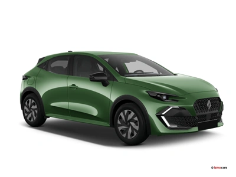

Agence de Toulouse
Située au Capitole, notre agence principale vous accueille 7 jours sur 7 de 8 h à 19 h. Plus de 80 véhicules disponibles.
AutoLoc France
Située au Capitole, notre agence principale vous accueille 7 jours sur 7 de 8 h à 19 h. Plus de 80 véhicules disponibles.
Bordeaux, la majestueuse capitale de la Nouvelle-Aquitaine, conjugue à merveille une architecture monumentale classée à l'UNESCO, une culture viticole mondialement reconnue et une douceur de vivre typique du Sud-Ouest de la France. Surnommée la "Porte de la Lune" en raison de la courbe harmonieuse que forme la Garonne à cet endroit, elle s'impose comme une destination incontournable

Idéale pour se déplacer en ville et se garer facilement, la Clio offre 5 places, un coffre généreux et une faible consommation. Elle est proposée avec kilométrage illimité et assistance 24 h/24. Réservez dès maintenant pour profiter de la saison estivale sur le littoral.
À partir de 49 € / jour